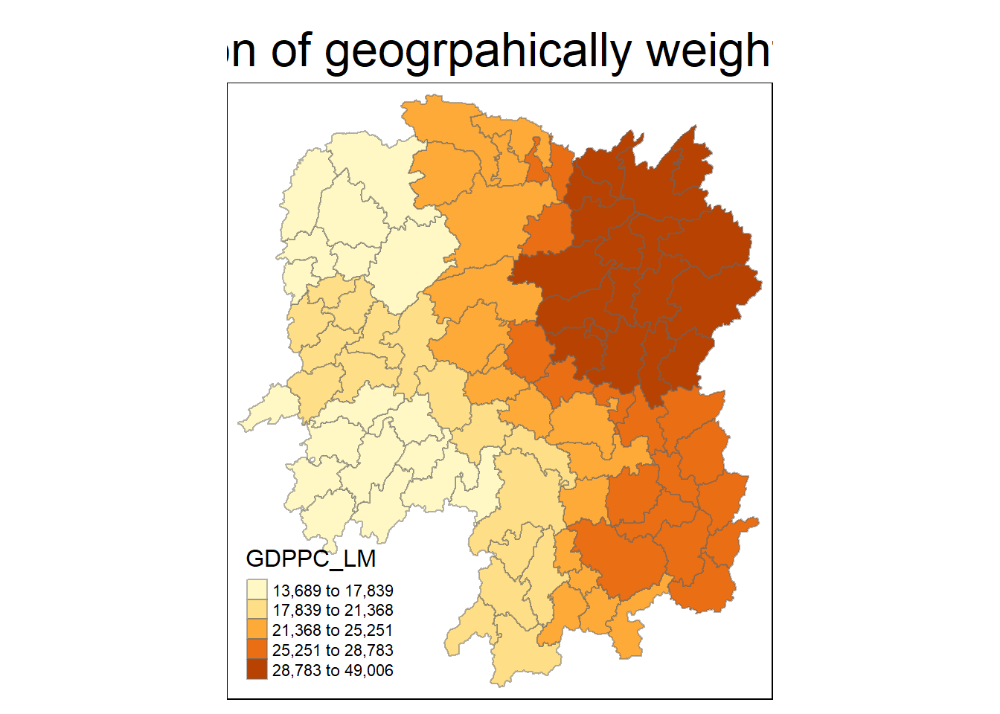

pacman::p_load(sf, tmap, tidyverse, knitr, GWmodel, ggstatsplot)In-class Exercise 4
4 Spatial Weights and Applications
4.1 Loading R packages
4.2 Additional Package
Focus is on the Geographically weighted summary statistics (GWSS)
Which helps to determine the optimal cut-off metrics
bw.gwr - e.g. look into data and recommend appropriate bandwidth for cut off adaptive - optimum number of neighbours for statistical significance.
4.3 Data Import and Preparation
For this in-class exericse, Hunan shp file will be used to
hunan_sf <- st_read(dsn = "data/geospatial",
layer = "Hunan")Reading layer `Hunan' from data source
`C:\zjho008\ISSS626-GAA\In-class_Ex\In-class_Ex04\data\geospatial'
using driver `ESRI Shapefile'
Simple feature collection with 88 features and 7 fields
Geometry type: POLYGON
Dimension: XY
Bounding box: xmin: 108.7831 ymin: 24.6342 xmax: 114.2544 ymax: 30.12812
Geodetic CRS: WGS 84Note CRS is not defined when importing the data and the CRS is WGS84.
4.4 Importign the Hunan_2012 table
hunan2012 <- read_csv("data/aspatial/Hunan_2012.csv")Rows: 88 Columns: 29
── Column specification ────────────────────────────────────────────────────────
Delimiter: ","
chr (2): County, City
dbl (27): avg_wage, deposite, FAI, Gov_Rev, Gov_Exp, GDP, GDPPC, GIO, Loan, ...
ℹ Use `spec()` to retrieve the full column specification for this data.
ℹ Specify the column types or set `show_col_types = FALSE` to quiet this message.Note: read_csv() is from the tidyverse package
4.4.1 Joining Hunan and Hunan_2012
hunan_sf <- left_join(hunan_sf ,hunan2012) %>%
select(1:3, 7, 15, 16, 31, 32)Joining with `by = join_by(County)`NAME_2, ID_3, NAME_3 (name of county), COUNTY, GDP, 26 - GIO, 31- Agri, 32- Service
A selection is done in the code chunk above to select variables that will be used for analysis
for relational joins there has to be a common identifier - values have to be identical
Good practice: to check through the name and the values/fields to ensure they are the same before performing the join. In this case from observation County has the same variable name. For this exercise the COUNTY variable was added into the hunan_2012 dataset. Otherwise, NAME_3 will have to be used and argument
JOIN_BY()has to be used.
E.g. the website from URA code to convert from mix of upper case and lower case (data from singstat) to all upper case before joining with the URA data
4.5 Converting to SpatialPolygon Data.Frame
To use GWmodel the file has to be converted from SF to SP
hunan_sp <- hunan_sf %>%
as_Spatial()A list is given instead of a data table.
class(hunan_sp) [1] “SpatialPolygonsDataFrame” attr(,“package”) [1] “sp”
4.6 Geographically Weighted Summary Statistics with adaptative bandwidth
4.6.1 Determining adaptive bandwidth
bw_CV <- bw.gwr(GDPPC ~ 1, # arbitrary number 1 as independent variable
data = hunan_sp, # hunan data
approach = "CV", # cross validation is used
adaptive = TRUE,
kernel = "bisquare",
longlat = T) # value taken in is in KMAdaptive bandwidth: 62 CV score: 15515442343
Adaptive bandwidth: 46 CV score: 14937956887
Adaptive bandwidth: 36 CV score: 14408561608
Adaptive bandwidth: 29 CV score: 14198527496
Adaptive bandwidth: 26 CV score: 13898800611
Adaptive bandwidth: 22 CV score: 13662299974
Adaptive bandwidth: 22 CV score: 13662299974 The score will eventually stop and the optimal number of neighbour is 22. This is also the same result if AIC is used. However, note that this will not always be the case for both approaches. ## AIC
bw_CV <- bw.gwr(GDPPC ~ 1,
data = hunan_sp,
approach = "AIC",
adaptive = TRUE,
kernel = "bisquare",
longlat = T)Adaptive bandwidth (number of nearest neighbours): 62 AICc value: 1923.156
Adaptive bandwidth (number of nearest neighbours): 46 AICc value: 1920.469
Adaptive bandwidth (number of nearest neighbours): 36 AICc value: 1917.324
Adaptive bandwidth (number of nearest neighbours): 29 AICc value: 1916.661
Adaptive bandwidth (number of nearest neighbours): 26 AICc value: 1914.897
Adaptive bandwidth (number of nearest neighbours): 22 AICc value: 1914.045
Adaptive bandwidth (number of nearest neighbours): 22 AICc value: 1914.045 change rate will stop and that is where the optimal value is determined Statistical method
4.7 Geographically Weighted Summary Statistics with fixed bandwidth
4.7.1 Determining fixed bandwidth
bw_CV <- bw.gwr(GDPPC ~ 1,
data = hunan_sp,
approach = "CV",
adaptive = FALSE,
kernel = "bisquare",
longlat = T)Fixed bandwidth: 357.4897 CV score: 16265191728
Fixed bandwidth: 220.985 CV score: 14954930931
Fixed bandwidth: 136.6204 CV score: 14134185837
Fixed bandwidth: 84.48025 CV score: 13693362460
Fixed bandwidth: 52.25585 CV score: Inf
Fixed bandwidth: 104.396 CV score: 13891052305
Fixed bandwidth: 72.17162 CV score: 13577893677
Fixed bandwidth: 64.56447 CV score: 14681160609
Fixed bandwidth: 76.8731 CV score: 13444716890
Fixed bandwidth: 79.77877 CV score: 13503296834
Fixed bandwidth: 75.07729 CV score: 13452450771
Fixed bandwidth: 77.98296 CV score: 13457916138
Fixed bandwidth: 76.18716 CV score: 13442911302
Fixed bandwidth: 75.76323 CV score: 13444600639
Fixed bandwidth: 76.44916 CV score: 13442994078
Fixed bandwidth: 76.02523 CV score: 13443285248
Fixed bandwidth: 76.28724 CV score: 13442844774
Fixed bandwidth: 76.34909 CV score: 13442864995
Fixed bandwidth: 76.24901 CV score: 13442855596
Fixed bandwidth: 76.31086 CV score: 13442847019
Fixed bandwidth: 76.27264 CV score: 13442846793
Fixed bandwidth: 76.29626 CV score: 13442844829
Fixed bandwidth: 76.28166 CV score: 13442845238
Fixed bandwidth: 76.29068 CV score: 13442844678
Fixed bandwidth: 76.29281 CV score: 13442844691
Fixed bandwidth: 76.28937 CV score: 13442844698
Fixed bandwidth: 76.2915 CV score: 13442844676
Fixed bandwidth: 76.292 CV score: 13442844679
Fixed bandwidth: 76.29119 CV score: 13442844676
Fixed bandwidth: 76.29099 CV score: 13442844676
Fixed bandwidth: 76.29131 CV score: 13442844676
Fixed bandwidth: 76.29138 CV score: 13442844676
Fixed bandwidth: 76.29126 CV score: 13442844676
Fixed bandwidth: 76.29123 CV score: 13442844676 Value is in KM - 76 KM ## AIC
bw_CV <- bw.gwr(GDPPC ~ 1,
data = hunan_sp,
approach = "AIC",
adaptive = FALSE,
kernel = "bisquare",
longlat = T)Fixed bandwidth: 357.4897 AICc value: 1927.631
Fixed bandwidth: 220.985 AICc value: 1921.547
Fixed bandwidth: 136.6204 AICc value: 1919.993
Fixed bandwidth: 84.48025 AICc value: 1940.603
Fixed bandwidth: 168.8448 AICc value: 1919.457
Fixed bandwidth: 188.7606 AICc value: 1920.007
Fixed bandwidth: 156.5362 AICc value: 1919.41
Fixed bandwidth: 148.929 AICc value: 1919.527
Fixed bandwidth: 161.2377 AICc value: 1919.392
Fixed bandwidth: 164.1433 AICc value: 1919.403
Fixed bandwidth: 159.4419 AICc value: 1919.393
Fixed bandwidth: 162.3475 AICc value: 1919.394
Fixed bandwidth: 160.5517 AICc value: 1919.391 When using different methods some would give the same answwer while some would give a different answer. So it is a good practice to test out the different methods
In this case the adaptive method is better as the Cross Validation and AIC gives the same output.
4.8 Geographically Weighted Summary Statistics with adaptative bandwidth
4.8.1 Computing geographically weighted summary statistics
bw_AIC <- bw.gwr(GDPPC ~ 1,
data = hunan_sp,
approach = "AIC",
adaptive = TRUE,
kernel = "bisquare",
longlat = T)Adaptive bandwidth (number of nearest neighbours): 62 AICc value: 1923.156
Adaptive bandwidth (number of nearest neighbours): 46 AICc value: 1920.469
Adaptive bandwidth (number of nearest neighbours): 36 AICc value: 1917.324
Adaptive bandwidth (number of nearest neighbours): 29 AICc value: 1916.661
Adaptive bandwidth (number of nearest neighbours): 26 AICc value: 1914.897
Adaptive bandwidth (number of nearest neighbours): 22 AICc value: 1914.045
Adaptive bandwidth (number of nearest neighbours): 22 AICc value: 1914.045 bw_AIC[1] 22gwstat <- gwss(data = hunan_sp,
vars = "GDPPC",
bw = bw_AIC,
kernel = "bisquare",
adaptive = TRUE,
longlat = T)Note: that the Kernel, Adaptive and Longlat have to remain the same when doing the calulation
4.8.2 Preparign the output data
Code chunk below is used to extract SDF data table from gwss object output from gwss(). It will be converted into data.frame by using as.data.frame()
gwstat_df <- as.data.frame(gwstat$SDF)Next, cbin*d() is used to append the newly derived data.frame onto hunan_sf sf data.frame
hunan_gstat <- cbind(hunan_sf, gwstat_df)
Showing growth at the main cities first whereas the rural areas see slower growth - which is commonly observed in developing countries. ## The code
tm_shape(hunan_gstat) +
tm_fill("GDPPC_LM",
n = 5,
style = "quantile") +
tm_borders(alpha = 0.5) + # or tm_polygons
tm_layout(main.title = "distribution of geogrpahically weighted mean",
main.title.position = "centre",
main.title.size = 2.0,
legend.title.size = 1.2,
legend.height = 1.50,
legend.width = 1.50,
frame = TRUE)4.9 Geogrpahically Weighted Correlation with Adaptive bandwidth
Business Question: Is there any relationship between GDP per capita and Gross Industry Output?
4.10 Conventional Statistical Solution
From the p-value there is a relatively strong correlation and statistical significance.
Certain areas not as highly correlated with neighbours while others are more correlated - Geographic view vs statistical solution view.
gwCorr - 0.750 to 0.761
The 1st band not as correlated with its neighbours
Local correlation can also be shown
4.10.1 Computing gwCorrelation
column 12 and 13 selected where we see the correlation coefficient.